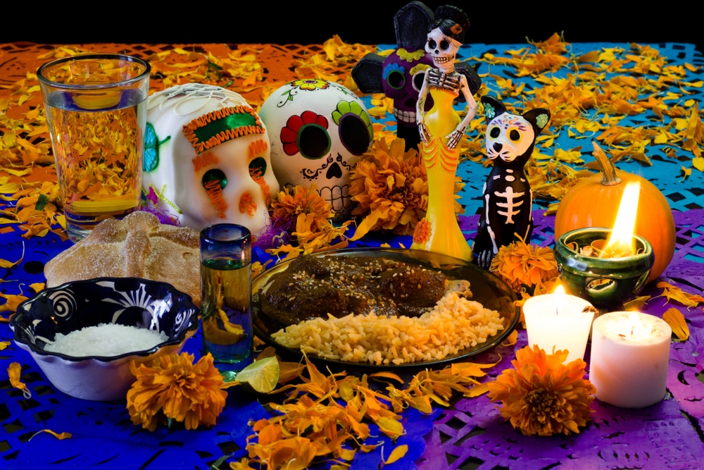

Mole

This is the traditional mole from México usually used as an offer to the passed away loved ones every November 1st and 2nd.
Ingridients
- Mole negro
- chicken
- ajonjoli
- red rice
Steps
- El pollo se pone en una olla y se cubre con agua. Se agrega la cebolla, el ajo y la sal y se pone a hervir el tiempo suficiente para que se cueza el pollo aproximadamente 20 minutos. Se retira de la lumbre para usarse mas tarde.
- Los chiles se limpian de rabo y semillas. Se limpian con un trapo húmedo para quitarles el polvo, no deben mojarse. Se abren para que queden planos.
- En un sartén se pone algo de la manteca de puerco a calentar a fuego medio y se pasan los chiles abiertos a freír rápidamente primero por la parte interna que debe verse que cambia de color y se enchina la piel del chile, se voltea y se fríe rápidamente por el otro lado cuidando que no se quemen porque amargan. Después de fritos los chiles se ponen a remojar con caldo de pollo caliente para que se suavicen.